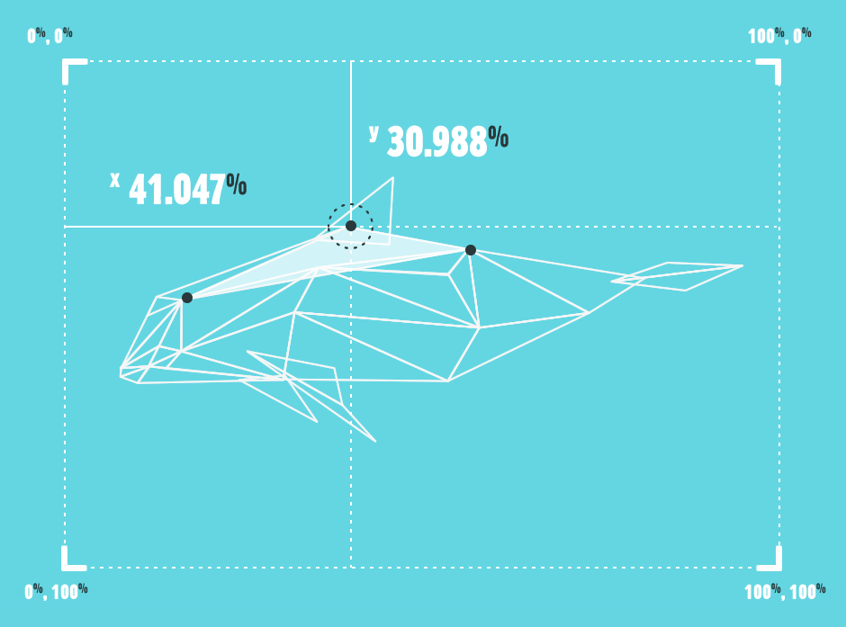

-
Back to threat
- Cause of death
- Numbers by year
- Number of blah
To view the figures, hover over the graph.
200410%
200510%
200610%
200710%
200810%
200910%
201010%
201110%
VALUE HEREText goes here
30 different $PECIES battle a fractured existence.
Each one captured through 30 broken pieces...
Together they tell their stories, and become whole again...
in an immersive showcasing.
Select a piece from the ring, or
select a piece randomly
To view the figures, hover over the graph.
200410%
200510%
200610%
200710%
200810%
200910%
201010%
201110%
VALUE HEREText goes here
SPECIES is an immersive exploration featuring 30 of Earth’s most fascinating yet critically endangered $PECIES — their survival splintered into fragile pieces.
Each $SPECIES shares a common thread of survival and is symbolized by one of 30 unique pieces that interconnect to form a greater whole. This collection celebrates biodiversity whiler serving as reminder of the beauty we risk losing as every moment passes. These 30 animals were carefully selected for their distinctive characteristics, so that we can learn about $PECIES we didn't know about previously as well as the struggles they have surviving. Many have evolved along unique evolutionary paths, making them particularly special.
Consider the Kakapo, a remarkable bird that evolved in isolation without natural predators and thus didn’t require instincts to defend itself. Tragically — like many $PECIES showcased here — humans began easily hunting upon encroaching their range, then introduced the stoat and other forms of pest control for other species. The Kakapo's near extinction stands as a testament to the devastating impact of human intervention.
Digging into a lot of research around this topic, it’s not long before you see the sobering reality. Nature's intricate evolutionary masterpiece, crafted over millions of years, faces unprecedented threats from human activities driven by economic pressures and exploitation.
Some $SPECIES featured in this collection face such dire circumstances that their survival seems almost impossible due to critically low population numbers — the Vaquita porpoise being a haunting example.
$PECIES aims to educate and inspire, and provoke thought on this complex and intricate topic. I sincerely hope that you can take something new away and enjoy this collection as much as I enjoyed researching, designing and building it.
This project, born out of tinkering with a simple property, proudly stands as part digital experiment, part creative exploration. Its backbone? Good old CSS — no canvas or WebGL, no tech wizardry.
Ever since I discovered CSS polygons, I’ve been a bit puzzled by how little buzz surrounds this tech. That curiosity drove me to build something that not only stands as a project on its own but also stretches this underappreciated piece of code to its limits.
The shard-shifting effects work exclusively in WebKit browsers — a limitation, sure, but it has the upside of functioning beautifully on mobile which are almost completely webkit-based. Firefox does support the clip-path property, but as an SVG referenced shape and thus, the coding for movement works in an entirely different manner. I wanted to focus purely on the CSS route.
Unfamiliar with it? Here’s a taste:: -webkit-clip-path: polygon( 40% 40%, 50% 60%, 60% 40% );
So, in essence — each shape morphs, moves and transforms through updated co-ordinates, always maintaining its triangular shape. This means with just 3 points per shape, CSS transitions handle the motion. No tricks or tools have been used to get the illustrated results, code-wise or graphically. Point by point, shape by shape, each one has been handcrafted via a personally-created tracing JS function after illustration.
If you have any questions on the technique or the project at all, please feel free to whip me a Tweet!
$Pecies is not linked to a specific charity or organisation, but I would like to highlight some of the great efforts being made out there for $PECIES under threat of extinction.
Edge of Existence* – a programme run by Zoological Society of London, deals directly with evolutionarily distinct animals, and has a great list of mammals and other types of $PECIES which you can look through if your interests have been perked. *This project is not associated with Edge of Existence.
Of the animals featured here, a number have great causes dealing specifically with their battles, or otherwise aid in respect to the $PECIES' family.
I have used an extensive range of sources to gather the information within this site, specifically the statistical data which is fairly tough to find. I thank each source sincerely, and wish to highlight their great resources here:
If you enjoyed this project, tell your peeps!

You can download a wallpaper specific $PECIES for your desktop within the exhibition, but here you can have them all in one place too!
$PECIES is powered by CSS! To see the $PECIES in their full glory, get your mobile device out or go grab yourself a ‘piece’ of Google Chrome.